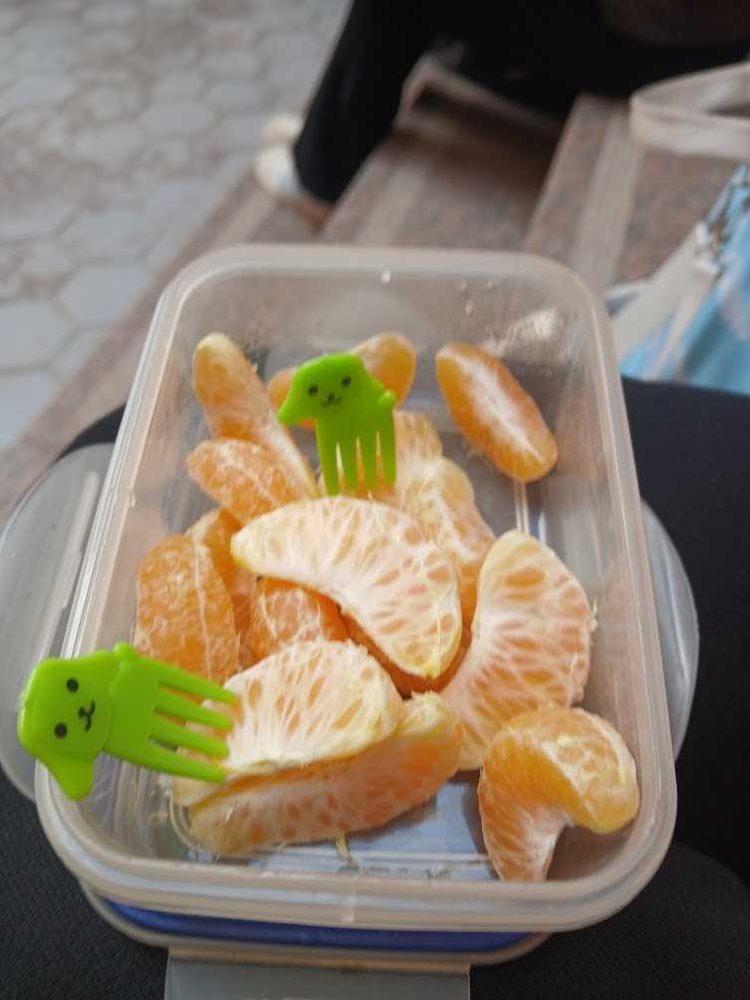
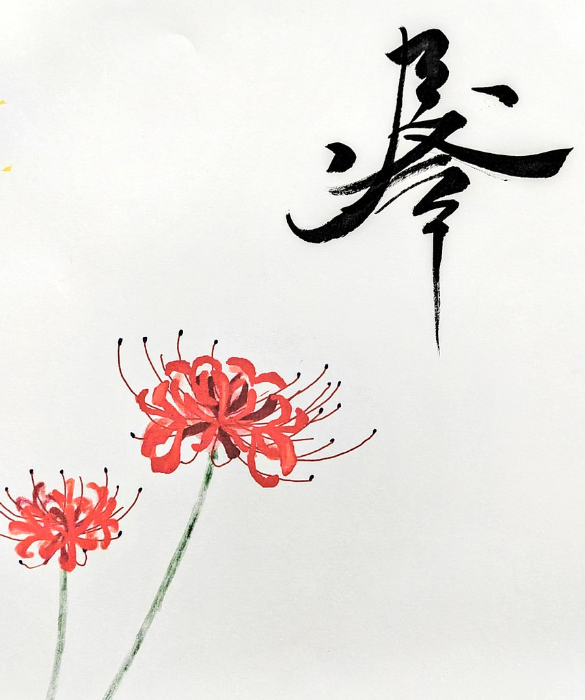
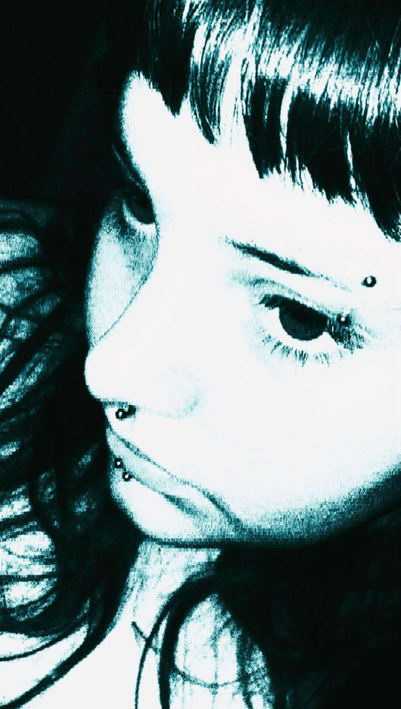

aspiring full-stack web developer
occasional hip hop beatmaker
I'm a Computer Science student passionate about building modern, intuitive web applications. My main focus is full-stack development using Angular and Spring Boot, while continuously expanding my knowledge of software architecture, backend development, UI design and developer tooling. Outside programming, I enjoy making experimental hip-hop music.
Primarily built the frontend of an enterprise conference-room reservation system using Angular 17 (standalone components, signals, reactive forms) with PrimeNG, on a 4-person Agile team paired with another frontend developer against a Spring Boot + H2 backend; also contributed on the backend. Implemented booking UI flows including a PrimeNG dialog-based reservation form, working within enterprise Git workflows and component-based architecture. Gained hands-on experience with real corporate development practices: sprint planning, code review, and cross-team coordination with backend engineers.
Learned backend fundamentals with Java Spring Boot: REST API design, JWT-based authentication, and role-based authorization with Spring Security, applied on a multi-role Hospital Management System project (see Projects). Learned relational and non-relational database concepts: SQL with MySQL, NoSQL with MongoDB, and database design; also learned unit/integration testing (JUnit 5, Mockito) and Docker containerization. Learned core software engineering practices: Git, Postman, and Swagger for API documentation and testing; client-server (CSR) vs. MVC architecture; and Waterfall vs. Agile development methodologies.
Team-built REST API for a hospital system with multi-role authentication (Admin, Doctor, Patient, Pharmacy), appointments, prescriptions, pharmacy/orders, and messaging; personally designed the DTO layer defining the API's request/response contracts. Built as part of the Banque Misr backend training program.
Rebuilt a stripped-down version of an internal admin "add rooms" page from the Capgemini internship as a standalone showcase, using standalone components, Angular Router, and Reactive Forms.
Contributed bug fixes and improvements (merged upstream) to a Qt-based desktop app implementing root-finding, linear-system, and optimization methods, working alongside the project owner as a collaborative university project.
Built and maintain a Discord bot with a slash-command dictionary system, admin CRUD tooling, and a modular, dependency-isolated codebase for easy extension. AI branch has been added to provide a conversational interface for users to interact with the bot.
Designed and built a personal portfolio site to showcase development work and music production, deployed via GitHub Pages.
Instructor: Mark "Techson" Thompson.
Certificate pending issuance.
Coursework completed; certificate not purchased.
Curious where the samples came from? Browse the playlists on my YouTube channel.
RHV2 is a heavily sample-driven, mostly lo-fi project inspired by the style of hip-hop I enjoy both listening to and making. It's a sound I've continued to explore ever since.
The album originally started as a heartbreak project called red hairs. I still have some of the early lyrics and beats from that version, but RHV2 evolved into something much more polished with a stronger sense of direction.
Rather than relying on lyrics, I wanted the samples and instrumentals to tell a story that the listener could piece together with enough attention. It isn't an especially meticulous or carefully planned instrumental album, because this version was originally meant to have vocals. I ultimately decided against including them, but I think the music still tells a complete enough story on its own.
Looking back, this was the project where I discovered myself as both a beatmaker and a person, shaping the sound, structure, and creative approach I still use today.

Compared to RHV2, this project is much less emotionally charged. Instead, I wanted to showcase how much I'd improved as a producer while exploring styles I'd never experimented with before.
During its production, I met clockwize, who contributed to one of the tracks and helped shape the project through his suggestions and feedback. I'd link his work, but despite my constant attempts to get him to upload his stuff to YouTube, he just won't. 🤷♂️
Although it isn't as personal as my previous work, I don't think every project has to be an emotional deconstruction of myself. Sometimes you just have to have fun with it! Some of my most polished, grand-sounding beats sit alongside some of my most minimal back-to-the-basics ones, creating a contrast that gives the project a more energetic and cohesive identity despite leaning closer to a beat tape than a traditional album.

The confrontational title was inspired by my actual father. He doesn't really like hip-hop, especially the way I make beats. I figured that if I made something he'd absolutely hate, I'd probably be making something that was true to myself.
This is my favorite and probably best work to date. It feels like the culmination of everything I want my music to be.
This project sits somewhere between RHV2 and pestoهات in terms of emotional relevance. I made it while turning twenty and trying to come to terms with the fact that I was no longer a teenager and that things were starting to get real. You could think of it as one last grasp at the rebellious spirit I always thought I had.
More than anything, this was the project where everything finally came together. I wasn't chasing technical improvement like I was on pestoهات, and I wasn't looking inward as much as I did on RHV2. I already knew the kind of music I wanted to make, so I could focus on bringing that vision to life.
I think this is me at my most experimental. If throwing things at the wall until they stuck was an album, it'd be this. I mixed different genres with hip-hop and experimented with a much wider variety of sounds, samples, and production techniques while still not sounding all over the place—it still sounds like a Pesto album. My personal highlights are the opening two-parter, what's on my mind is on there, and the ending.
This was also the first time I didn't just dump the entire project into a single video. Instead, I uploaded each track separately, which I think is a much better way to present my work going forward.
Oh yeah, and clockwize is here again. Collaborating with me might be the only way to get his work onto the internet.

You can directly contact me on my discord at: pesterian
Please note I'm not always available, and messages from strangers end up in a seperate inbox I have to check manually.